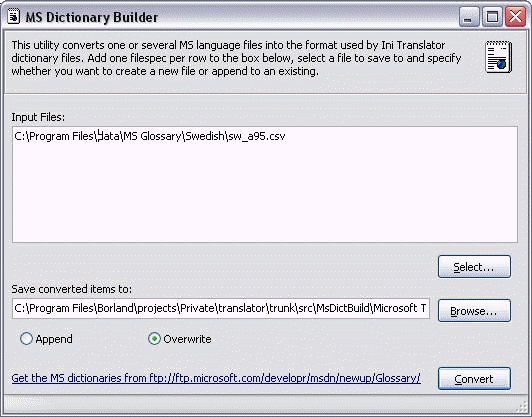

The application looks like this:

Click on the Convert button to extract the strings fro m the CSV file and put them into the dictionary file.
As of 2006, Microsoft no longer provide the glossary CSV for free download. Instead, they now have a single consolidated csv file known as the MS Terminology Translations CSV. If you still want the old glossary file, you can request them from Microsoft. More information about how to obtain the old CSV files and how to get the new CSV file, go to http://www.microsoft.com/globaldev/tools/MILSGlossary.mspx.
Some of the CSV files are not correctly formatted. Specifically, they may contain additional linebreaks that the application cannot handle and the end result is an incorrect dictionary file. To fix this, open the CSV in Notepad or WordPad and remove the line breaks and save as text. You should now be able to create a valid dictionary with this application.